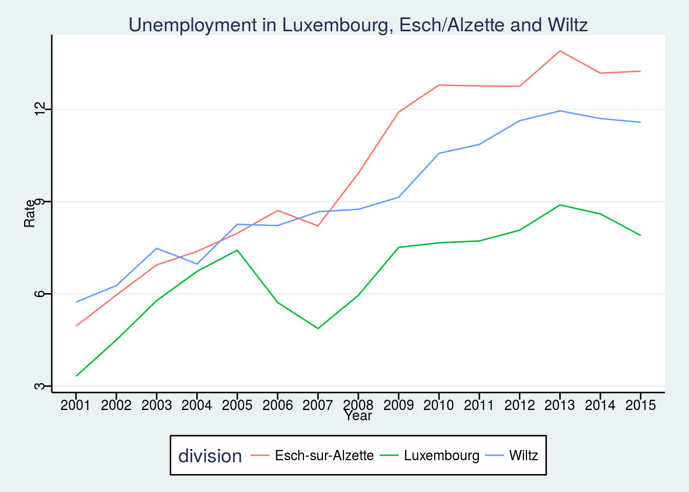
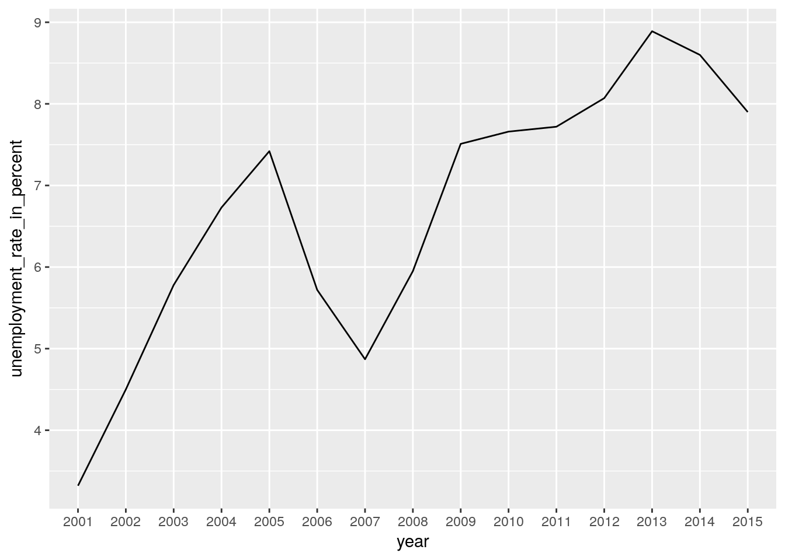
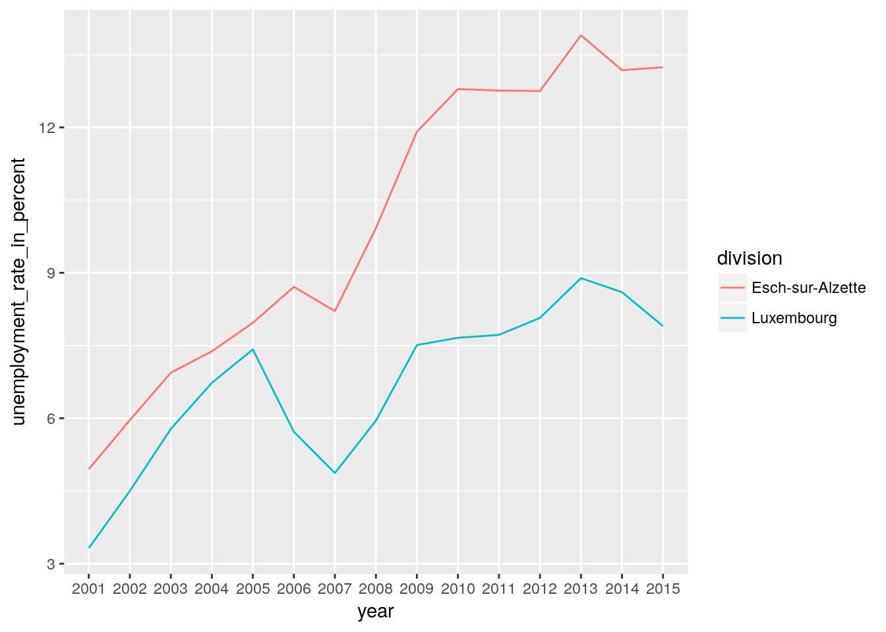
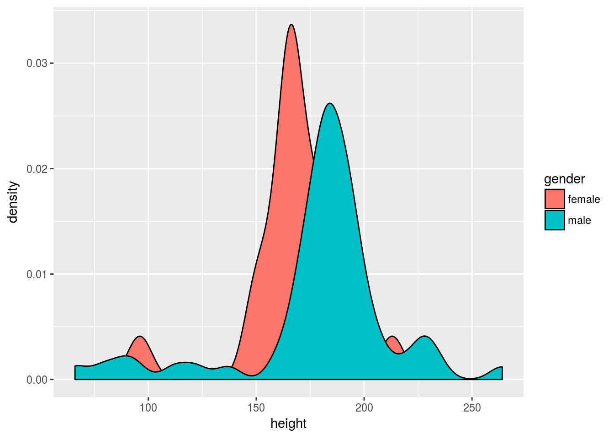

Chapter 6 Graphs
By default, it is possible to make a lot of graphs with R without the need of any external packages. However, in this chapter, we are going to learn how to make graphs using ggplot2 which is a very powerful package that produces amazing graphs. There is an entry cost to ggplot2 as it works in a very different way than what you would expect, especially if you know how to make plots with the basic R functions already. But the resulting graphs are well worth the effort and once you’ll know more about ggplot2 you’ll see that it in a lot of situations it is actually faster and easier. Even if you’re not interested in plotting, I advise you read this chapter, as I will continue showing you neat functions to manipulate data, such as dplyr::rowwise() and dplyr::pull().
6.1 Resources
Before showing some examples and the general functionality of ggplot2, I list here some online resources that I keep coming back to:
I have a cookbook approach to using ggplot2; I try to find an example online that looks similar to what I have in mind, copy and paste the code and then adapt it to my case. The above resources are the ones I consult the most in these situations (I also go back to past code I’ve written, of course). Don’t hesitate to skim these resources for inspiration and to learn more about some extensions to ggplot2. In the next subsections I am going to show you how to draw the most common plots, as well as show you how to customize your plots with ggthemes.
6.2 Examples
6.2.1 Barplots
To follow the examples below, load the following libraries:
library(ggplot2)
library(ggthemes)ggplot2 is an implementation of the Grammar of Graphics by Wilkinson (2006), but you don’t need to read the books to start using it. If we go back to the Star Wars data (contained in dplyr), and wish to draw a barplot of the gender, the following lines are enough:
ggplot(starwars, aes(gender)) +
geom_bar()
The first argument of the function is the data (called starwars in this example), and then the function aes(). This function is where you list the variables you want to map, and to quote the help file of aes(), describes how the variables are mapped to visual properties (aesthetics) of geoms. You can get different kind of plots by using different geom_ functions.
You can also change the coordinate system in your barplot:
ggplot(starwars, aes(gender)) +
geom_bar() +
coord_flip()
6.2.2 Density
geom_density() is the geom that allows you to get density plots:
ggplot(starwars, aes(height)) +
geom_density()## Warning: Removed 6 rows containing non-finite values (stat_density).
Let’s go into more detail now; what if you would like to plot the densities for females and males only (removing the droids from the data first)? This can be done by first filtering the data using dplyr and then separating the dataset by gender:
starwars %>%
filter(gender %in% c("female", "male"))The above lines do the filtering; only keep gender if gender is in the vector "female", "male". This is much easier than having to write gender == "female" | gender == "male". Then, we pipe this dataset to ggplot:
starwars %>%
filter(gender %in% c("female", "male")) %>%
ggplot(aes(height, fill = gender)) +
geom_density()## Warning: Removed 5 rows containing non-finite values (stat_density).
Let’s take a closer look to the aes() function: I’ve added fill = gender. This means that the there will be one density plot for each gender in the data, and each will be colored accordingly. This is where ggplot2 might be confusing; there is no need to write explicitly (even if it is possible) that you want the female density to be red and the male density to be blue. You just map the variable gender to this particular aesthetic. You conclude the plot by adding geom_density() which is this case is the plot you want. We will see late on how to change the colors of your plot.
6.2.3 Line plots
For the line plots, we are going to use official unemployment data (the same as in the previous chapter, but with all the available years). Get it from here (downloaded from: http://www.statistiques.public.lu/stat/TableViewer/tableView.aspx?ReportId=12950&IF_Language=eng&MainTheme=2&FldrName=3&RFPath=91).
Let’s plot the unemployment for the canton of Luxembourg only:
unemp_lux_data = import("datasets/unemployment/all/unemployment_lux_all.csv")
unemp_lux_data %>%
filter(division == "Luxembourg") %>%
ggplot(aes(year, unemployment_rate_in_percent, group = 1)) +
geom_line()
Because line plots are 2D, you need to specify the y and x axes. There is also another option you need to add, group = 1. This is to tell aes() that the dots have to be connected with a single line. What if you want to plot more than one commune?
unemp_lux_data %>%
filter(division == "Luxembourg" | division == "Esch-sur-Alzette") %>%
ggplot(aes(year, unemployment_rate_in_percent, group = division, color = division)) +
geom_line()
This time, I’ve specified group = division which means that there has to be one line per as many communes as in the variable division. I do the same for colors. I think the next example illustrates how ggplot2 is actually brilliant; if you need to add a third commune, there is no need to specify anything else; no need to add anything to the legend, no need to specify a third color etc:
unemp_lux_data %>%
filter(division %in% c("Luxembourg", "Esch-sur-Alzette", "Wiltz")) %>%
ggplot(aes(year, unemployment_rate_in_percent, group = division, color = division)) +
geom_line()
6.2.4 Facets
In some case you have a factor variable that separates the data you wish to plot into different categories. If you want to have a plot per category you can use the facet_grid() function. Careful though, this function does not take a variable as an argument, but a formula, hence the ~ symbol in the code below:
starwars %>%
mutate(human = case_when(species == "Human" ~ "Human",
species != "Human" ~ "Not Human")) %>%
filter(gender %in% c("female", "male"), !is.na(human)) %>%
ggplot(aes(height, fill = gender)) +
facet_grid(. ~ human) + #<--- this is a formula
geom_density()## Warning: Removed 4 rows containing non-finite values (stat_density).
By changing the formula, you change how the facetting is done:
starwars %>%
mutate(human = case_when(species == "Human" ~ "Human",
species != "Human" ~ "Not Human")) %>%
filter(gender %in% c("female", "male"), !is.na(human)) %>%
ggplot(aes(height, fill = gender)) +
facet_grid(human ~ .) +
geom_density()## Warning: Removed 4 rows containing non-finite values (stat_density).
Recall the categorical variable more_1 that we computed in the previous chapter? Let’s use it as a faceting variable:
starwars %>%
rowwise() %>%
mutate(n_films = length(films)) %>%
mutate(more_1 = case_when(n_films == 1 ~ "Exactly one movie",
n_films != 1 ~ "More than 1 movie")) %>%
mutate(human = case_when(species == "Human" ~ "Human",
species != "Human" ~ "Not Human")) %>%
filter(gender %in% c("female", "male"), !is.na(human)) %>%
ggplot(aes(height, fill = gender)) +
facet_grid(human ~ more_1) +
geom_density()## Warning: Removed 4 rows containing non-finite values (stat_density).
6.2.5 Pie Charts
I am not a huge fan of pie charts, but sometimes this is what you have to do. So let’s see how you can create pie charts. First, let’s create a mock dataset with the function tibble::tribble() which allows you to create a dataset line by line:
test_data <- tribble(
~id, ~var1, ~var2, ~var3, ~var4, ~var5,
"a", 16.5, 18, 20, 22, 24,
"b", 20, 20, 18, 22, 20,
"c", 24, 22, 20, 18, 16.5
)This data is not in the right format though, which is wide. We need to have it in the long format for it to work with ggplot2. For this, let’s use tidyr::gather() as seen in the previous chapter:
test_data_long = test_data %>%
gather(variable, value, starts_with("var"))Now, let’s plot this data, first by creating 3 bar plots:
ggplot(test_data_long) +
facet_wrap(~id) +
geom_bar(aes(variable, value, fill = variable), stat = "identity")
In the code above, I introduce a new option, called stat = "identity". By default, geom_bar() counts the number of observations of each category that is plotted, which is a statistical transformation. By adding stat = "identity", I force the statistical transformation to be the identity function, and thus plot the data as is.
To create the pie chart, it is enough to add the option coord_polar() at the end of the code: this is because a pie chart can be seen as a barplot living in a world with polar coordinates:
ggplot(test_data_long) +
facet_wrap(~id) +
geom_bar(aes(variable, value, fill = variable), stat = "identity") +
coord_polar()
6.2.6 Adding text to plots
6.2.7 Customization
Let’s go back to the unemployment line plots.
unemp_lux_data %>%
filter(division %in% c("Luxembourg", "Esch-sur-Alzette", "Wiltz")) %>%
ggplot(aes(year, unemployment_rate_in_percent, group = division, color = division)) +
theme(legend.position = "bottom") +
labs(title="Unemployment in Luxembourg, Esch/Alzette and Wiltz", x="Year", y = "Rate")+
geom_line()
unemp_lux_data %>%
filter(division %in% c("Luxembourg", "Esch-sur-Alzette", "Wiltz")) %>%
ggplot(aes(year, unemployment_rate_in_percent, group = division, color = division)) +
theme_stata() +
theme(legend.position = "bottom") +
labs(title="Unemployment in Luxembourg, Esch/Alzette and Wiltz", x="Year", y = "Rate") +
geom_line()
unemp_lux_data %>%
filter(division %in% c("Luxembourg", "Esch-sur-Alzette", "Wiltz")) %>%
ggplot(aes(year, unemployment_rate_in_percent, group = division, color = division)) +
theme_minimal() +
scale_color_hc() +
theme(legend.position = "bottom", legend.title = element_blank()) +
labs(title="Unemployment in Luxembourg, Esch/Alzette and Wiltz", x = "Year", y = "Rate") +
geom_line()
References
Wilkinson, Leland. 2006. The Grammar of Graphics. Springer Science & Business Media.